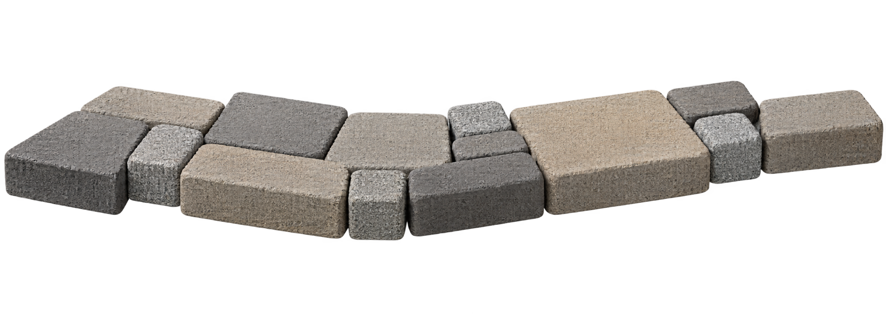
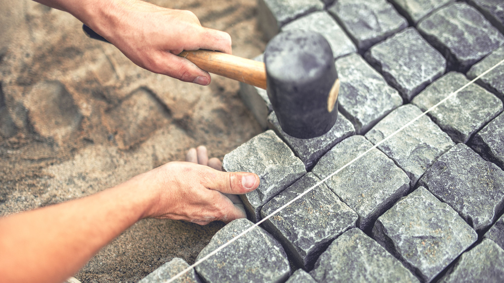
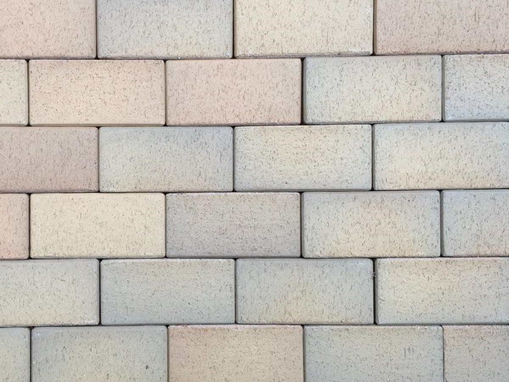
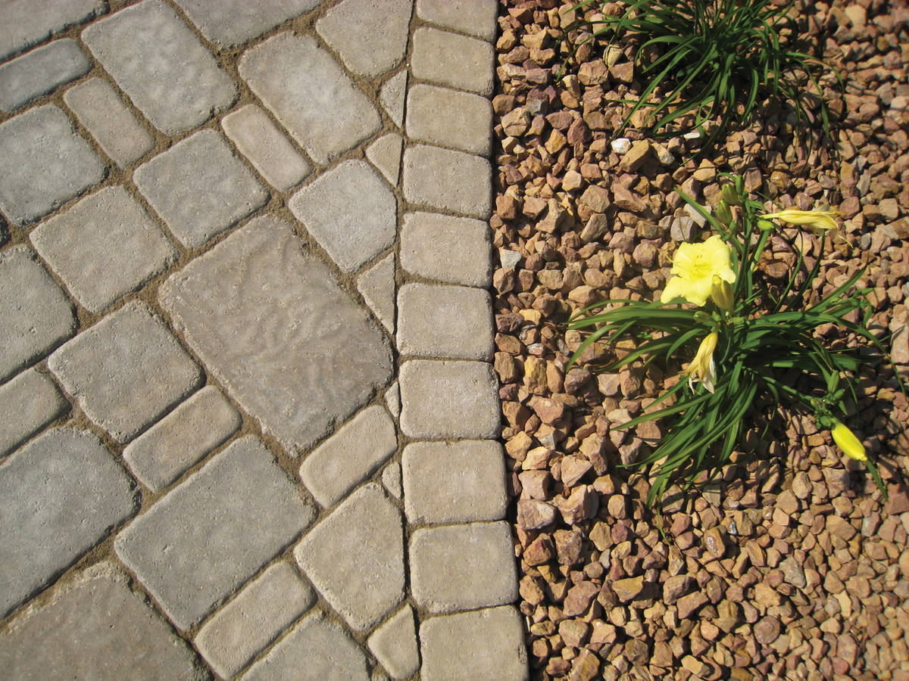

UZTICAMA BRUĢĒŠANA,
RĪGĀ UN PIERĪGĀ
Bruģa ieklāšana piemājas celiņiem, pagalmiem, autostāvvietām un lielām teritorijām.
APRĒĶINĀT PROJEKTU →

Sazinieties jau šodien!
KONCEPCIJA · FORMA NETIEK NOSŪTĪTAPILNS TERITORIJAS
LABIEKĀRTOJUMS
PIEREDZE MAZOS
UN LIELAS APJOMA DARBOS
SIA “V SERVICE” ceļu būves darbus veic kopš 2007. gada. Strādājam ar privātiem pasūtītājiem, uzņēmumiem, valsts un pašvaldību iestādēm.
- Individuāla pieeja katram projektam
- Piemājas celiņi un pagalmi
- Autostāvlaukumi, laukumi un ielas
SEGUMS, KAS RUNĀ
PATS PAR SEVI



SIA “V SERVICE”
KOPŠ 2007. GADA
Kvalificēti un pieredzējuši speciālisti nodrošina kvalitatīvu un operatīvu pasūtījumu izpildi. Pirms darbu sākuma aprēķinām materiālu daudzumu, sagatavojam tāmi un vienojamies par piemērotāko risinājumu.
PĀRRUNĀT IECERIVIENKĀRŠS DARBA PROCESS
Sazināmies
Izrunājam teritoriju, segumu un darba apjomu.
Aprēķinām
Nosakām materiālu daudzumu un sagatavojam tāmi.
Ieklājam
Sagatavojam pamatni un precīzi ieklājam segumu.
Nododam
Pārbaudām detaļas un sakārtojam teritoriju.
ATBILDES PIRMS
DARBU SĀKUMA
Kādus bruģēšanas darbus jūs veicat?＋
No piemājas celiņiem un pagalmiem līdz stāvlaukumiem, laukumiem un ielām.
Vai palīdzat aprēķināt materiālus un tāmi?＋
Jā. Bruget.lv aicina rakstīt, lai aprēķinātu materiālu daudzumu, sagatavotu tāmi un vienotos par sadarbību.
Vai strādājat arī ar uzņēmumiem un iestādēm?＋
Jā. Uzņēmums norāda pieredzi ar privātiem klientiem, uzņēmumiem, valsts un pašvaldību iestādēm.
BRUĢĒŠANA RĪGĀ
UN PIERĪGĀ
Projektus izvērtējam individuāli. Aprakstiet vietu un ieceri, lai varam sagatavot piemērotāko piedāvājumu.
PIETEIKT PROJEKTUSAŅEMIET SAVA PROJEKTA TĀMI
Rakstiet vai zvaniet. Aprēķināsim materiālu daudzumu un vienosimies par nākamo soli.